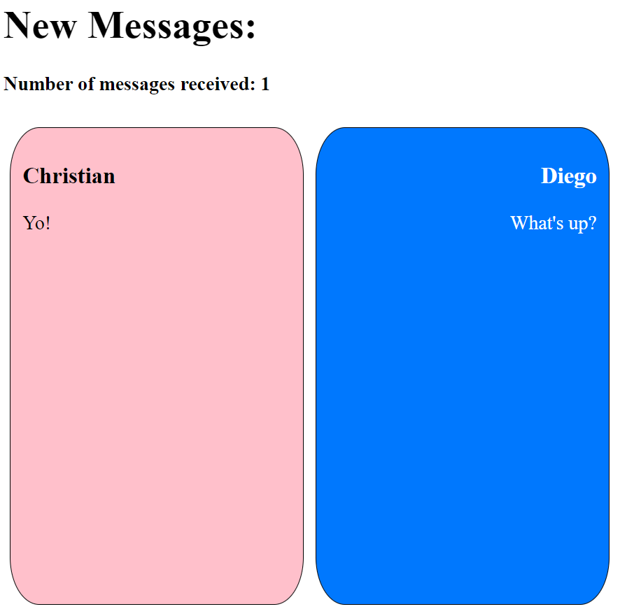

Gmetrix
Here Are My Projects!
Character Quiz
This project's task was to make a quiz that at the end gives you a character from a show.
You answered questions and it will give you the character that most relates to your answers.
This project tested our understanding of using if/else condtionals in javascript and
I feel I was able to learn a lot through the project making process.
A big challenge for me throughout this project was making sure that my if/else statements worked.
I took a lot of debugging but I eventually figured it out.
Adventure Game
For this project we had to make an adventure game using jquery actions.
This project was the first time I was seeing these new actions and learning them was an important part to doing this project.
My biggest challenge I faced was definitely the restart button.
With the click of the button we we're supposed to be brought back to the beginning of the game and I could not figure out why what I was doing was wrong.
I made it so that it would hide everything not needed for the first page and showed everything it did need, but it wouldn't work so I made it
so when you click the button it links you back to the first page.
Social Media Page
For this project we had to make a social media page for someone we classified as a hero.
I chose my favorite artist Denzel Curry.
I felt like when making this project it helped me better understand the flexbox tool.
I understood what each position meant but applying it to a website where there's multiple positions it really helped.
I struggled on positioning my divs correctly so they all were coherent with each other.
Chatbot

We had to make a chatbot where you would send a message and it would appear in the feed.
The most important thing I learned while making the chatbot was the append feature.
Append was also the thing I struggled with the most, but after trying to understand it better with the help from my teacher I was able to complete the chatbot.
Basketball Counter
For the Basketball Counter we had to use our skills of jquery to keep a counter for how many points were scored in the game.
I learned how to make a counter with jquery.
I had prior knowledge of how to make a counter in python and used that knowledge to overcome the challenge of making my counter work.
College Packing List
For the college packing list we had to use buttons to append items on to a list.
I learned how to use the click function better.
This was something I previously worked on but still struggled. So having this extra practice was really good for me.
Gallary Project
For this gallary project we had to make a gallary of images that fit a theme.
For this project we had to use our knowledge of lists in Jquery to be able to add an image link into the gallary.
This project provided me with more practice with using the .push method aswell as .append.
Human Trafficking
For this project we were faced with the challenge to provide a call to
action for an issue and my group and I landed on Human Trafficking. This project tested our knowledge that we’ve gained so far throughout
the year. Whether that be jquery, flexboxes, or even things we learned last year as well. This project helped me practice the
skills that we already learned.